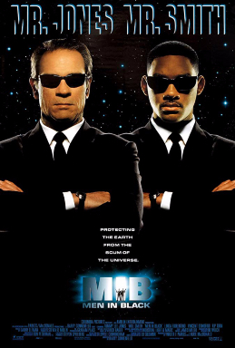

Primera película
Primera película("Men In Black")

Sinopsis
Durante muchos años los extraterrestres han vivido en la Tierra, mezclados con los seres humanos, sin que nadie lo supiese. Los Hombres de Negro son agentes especiales que forman parte de una unidad altamente secreta del gobierno; su misión consiste en controlar a los alienígenas. Dos de estos agentes (uno veterano y otro recién incorporado), cuya misión consiste en vigilar a los alienígenas que viven en Nueva York, descubren a un terrorista galáctico que pretende acabar con la Humanidad.
Fecha de estreno: 2 de julio de 1997
Duración: 100 min
Música compuesta por: Danny Elfman
Guion: Ed Solomon
Dirección: Barry Sonnenfeld
| Intérpretes |
| Personajes |
Actores |
Actor de voz (Hispanoamérica) |
| Agente K |
Tommy Lee Jones |
Blas García |
| Agente J / James Darrell Edwards III |
Will Smith |
Juan Alfonso Carralero |
| Laurel Weaver |
Linda Fiorentino |
Maru Guzmán |
| Edgar |
Vincent D'Onofrio |
Emilio Guerrero |
| Agent Zed |
Rip Torn |
Jorge Fink |
| Jack Jeebs |
Tony Shalhoub |
Paz Samaniego |
| Beatrice |
Siobhan Fallon |
Concha García Valero |
| Gentle Rosenberg |
Mike Nussbaum |
Antonio Gómez de Antonio |
| Van Driver |
Jon Gries |
Xavier Fernández |
Resumen
El policía, James Edwards, persigue a un maleante al que ve trepar por las paredes y parpadear al revés que los humanos aunque no llegará a detenerlo porque se lanza al vacío tras decirle que la Tierra va a ser destruida.
Nadie cree lo que cuenta del muerto excepto Laurel Weaver, la forense y un extraño agente que al llegar le explica que los segundos párpados del muerto eran agallas, pues era un extraterrestre, interesándose tras ello por el arma que llevaba el suicida y que desapareció, llevándolo a la pequeña tienda de un perista para que la identifique.
Aunque no hay rastro de armas, el otro agente, K, le pide al perista que se las muestre, y como no colabora, le dispara a la cabeza, viendo Edwards atónito cómo le vuelve a crecer, tras lo que les muestra un arsenal donde reconoce el arma, aunque tras ello el agente K le borra la memoria.
Entre tanto, una nave espacial aterriza cerca de una granja, y su ocupante toma el cuerpo del granjero para tratar de pasar inadvertido, viajando por la ciudad en una furgoneta de fumigación donde lleva su nave.
Al día siguiente, Edwards, a petición del Agente K se presenta a una prueba para la que compite con los mejores marines, policías y soldados, siendo el elegido para reemplazar al viejo compañero de K en la agencia de los "Men in Black", agentes dedicados a vigilar la estancia en la tierra de los extraterrestres, protegiéndoles y evitando que creen problemas.
El extraterrestre disfrazado de granjero acude a un restaurante donde acaba con dos personas aparentemente normales, uno de los cuales era un príncipe Arquiliano.
Cuando K y James, rebautizado como J acuden al depósito de cadáveres, la forense les informa de que los muertos carecen de órganos internos, abriéndose entonces la cabeza de uno, en cuyo interior ven agonizando al diminuto príncipe que les cuenta que la galaxia está en el cinturón de Orión y que deben salvarla.
Su muerte hace que los Arquilianos amenacen con destruir la Tierra si no consiguen la galaxia, que, les explican, es una fuente de energía subatómica de gran importancia.
J comprende que Orión era el gato del muerto y acude al depósito. Pero el extraterrestre llegó antes y consiguió atraparlo, quedándose con su extraño cascabel, que es la galaxia, huyendo con ella y llevándose a Laurel como rehén.
Con solo una hora para evitar que los Arquilianos destruyan la Tierra, buscan al huido, cuya nave requisaron, pensando que tratará de utilizar las que figuran en los restos de lo que fue la Exposición Universal de 1964, aunque llegan tarde, pues consiguió huir ya en una de ellas, aunque K y J consiguen abatirla, acudiendo a la segunda, tras desarmar a los agentes y engullendo también a K, mientras J trata de evitar que suba matando algunas cucarachas para llamar su atención, ya que el extraterrestre pertenece a su especie, lanzándose contra el agente, aunque revienta cuando K le dispara desde dentro tras recuperar su arma.
Pero no muere, y cuando se dispone a acabar con ellos, un disparo acaba con él, descubriendo que fue efectuado por la doctora que fue testigo de todo lo ocurrido.
Cumplida su misión, y tras comprobar que J ya está preparado, K le dice que será su sustituto y que desea que le apliquen el flash para olvidar todos sus recuerdos para poder volver junto a la mujer que ama y a la que nunca olvidó.
En la prensa amarilla leen la noticia de la vuelta del coma de un hombre después de 35 años - K - mientras le espera el nuevo "hombre de negro", Laurel.